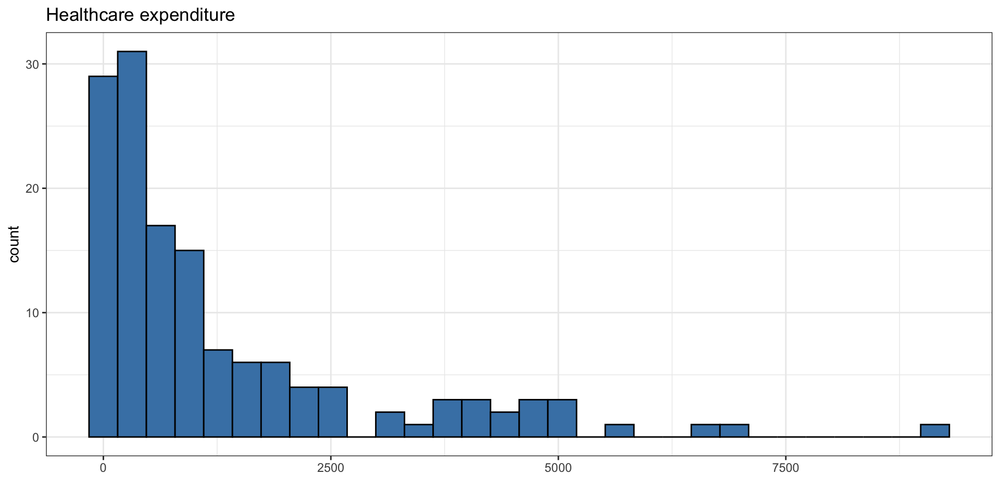
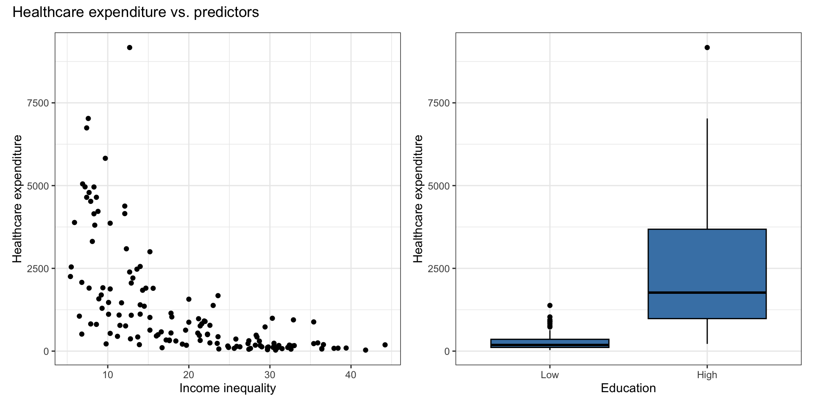
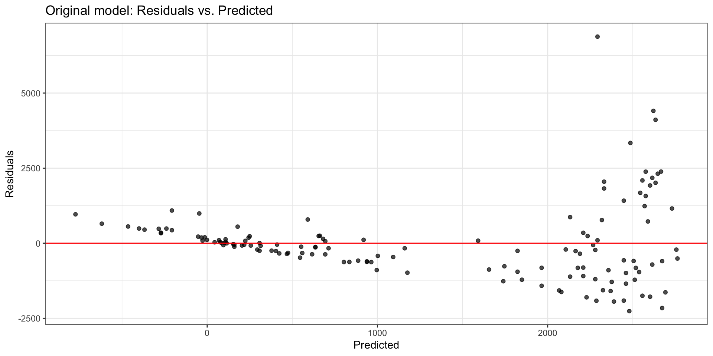
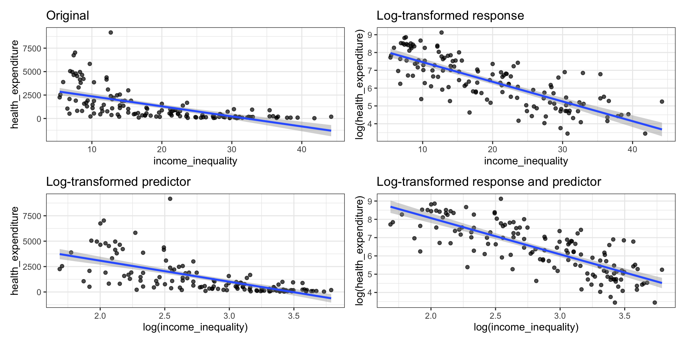
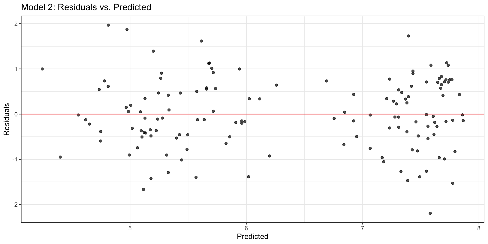
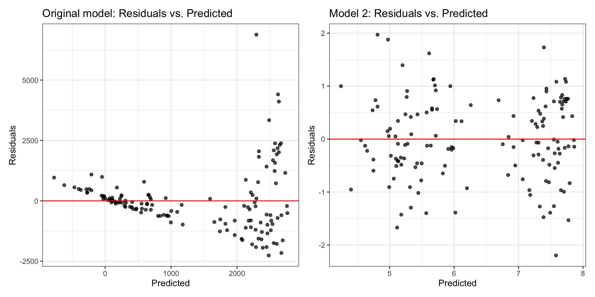

# load packages
library(tidyverse)
library(tidymodels)
library(knitr)
library(patchwork)
# set default theme in ggplot2
ggplot2::theme_set(ggplot2::theme_bw())Variable transformations
Computing set up
Topics
- Log-transformation on the response
Variable transformations
Data: Life expectancy in 140 countries
The data set comes from Zarulli et al. (2021) who analyze the effects of a country’s healthcare expenditures and other factors on the country’s life expectancy. The data are originally from the Human Development Database and World Health Organization.
There are 140 countries (observations) in the data set.
Click here for the original research paper.
Variables
life_exp: The average number of years that a newborn could expect to live, if he or she were to pass through life exposed to the sex- and age-specific death rates prevailing at the time of his or her birth, for a specific year, in a given country, territory, or geographic income_inequality. ( from the World Health Organization)income_inequality: Measure of the deviation of the distribution of income among individuals or households within a country from a perfectly equal distribution. A value of 0 represents absolute equality, a value of 100 absolute inequality (based on Gini coefficient). (from Zarulli et al. (2021))
Variables
education: Indicator of whether a country’s education index is above (High) or below (Low) the median index for the 140 countries in the data set.- Education index: Average of mean years of schooling (of adults) and expected years of school (of children), both expressed as an index obtained by scaling wit the corresponding maxima.
health_expend: Per capita current spending on on healthcare good sand services, expressed in respective currency - international Purchasing Power Parity (PPP) dollar (from the World Health Organization)
Exploratory data analysis

Exploratory data analysis
The goal is to use income inequality and education to understand variability in health expenditure

Original model
health_fit <- lm(health_expenditure ~ income_inequality + education,
data = health_data)| term | estimate | std.error | statistic | p.value |
|---|---|---|---|---|
| (Intercept) | 2070.599 | 534.653 | 3.873 | 0.000 |
| income_inequality | -64.346 | 18.626 | -3.455 | 0.001 |
| educationHigh | 1039.298 | 359.736 | 2.889 | 0.004 |
Original model: Residuals vs. fitted

What model assumption(s) appear to be violated?
Consider different transformations…

Transformation on \(Y\)
Identifying a need to transform Y
Typically, a “fan-shaped” residual plot indicates the need for a transformation of the response variable Y
There are multiple ways to transform a variable, e.g., \(Y^{1/2}\), \(1/Y\), \(\log(Y)\) . These are called variance stabilizing transformations
\(\log(Y)\) the most straightforward to interpret, so we use that transformation when possible
When building a model:
Choose a transformation and build the model on the transformed data
Reassess the residual plots
If the residuals plots did not sufficiently improve, try a new transformation!
Log transformation on \(Y\)
- If we apply a log transformation to the response variable, we want to estimate the parameters for the statistical model
\[ \log(\mathbf{Y}) = \mathbf{X}\boldsymbol{\beta} + \boldsymbol{\epsilon}, \quad \boldsymbol{\epsilon} \sim N(\mathbf{0}, \sigma^2_{\epsilon}\mathbf{I}) \]
- The regression equation is
\[\widehat{\log(\mathbf{Y})} = \mathbf{X}\hat{\boldsymbol{\beta}}\]
Log transformation on \(Y\)
We fit the model in terms of \(\log(\mathbf{Y})\) but want to interpret the model in terms of the original variable \(Y\) , so we need to write the regression equation in terms of \(Y\)
\[ \begin{aligned} &\widehat{\log(\mathbf{Y})} = \mathbf{X}\hat{\boldsymbol{\beta}} \\[8pt] \Rightarrow \quad &\hat{\mathbf{Y}} = e^{\mathbf{X}\hat{\boldsymbol{\beta}}} \end{aligned} \]
Model interpretation
\[\begin{align}\hat{y_i} &= e^{\mathbf{x}_i\hat{\boldsymbol{\beta}}} \\ & = e^{(\hat{\beta}_0 + \hat{\beta}_1 x_{i1} + \dots + \hat{\beta}_px_{ip})} \\ &= e^{\hat{\beta}_0}e^{\hat{\beta}_1x_{i1}}\dots e^{\hat{\beta}_px_{ip}}\end{align}\]
. . .
Intercept: When \(x_{i1} = \dots = x_{ip} =0\), \(y_i\) is expected to be \(e^{\hat{\beta}_0}\)
Coefficient of \(X_j\): For every one unit increase in \(x_{ij}\), \(y_{i}\) is expected to multiply by a factor of \(e^{\hat{\beta}_j}\), holding all else constant.
Model with log(Y)
| term | estimate | std.error | statistic | p.value |
|---|---|---|---|---|
| (Intercept) | 7.096 | 0.324 | 21.895 | 0 |
| income_inequality | -0.065 | 0.011 | -5.714 | 0 |
| educationHigh | 1.117 | 0.218 | 5.121 | 0 |
Interpret each of the following in terms of health expenditure
Intercept
income_inequalityeducation
Model with log(Y): Residuals

Compare residual plots

Learn more
See Log Transformations in Linear Regression for more details about interpreting regression models with log-transformed variables.
Recap
- Log-transformation on the response
References
Zarulli, Virginia, Elizaveta Sopina, Veronica Toffolutti, and Adam Lenart. 2021. “Health Care System Efficiency and Life Expectancy: A 140-Country Study.” Edited by Srinivas Goli. PLOS ONE 16 (7): e0253450. https://doi.org/10.1371/journal.pone.0253450.